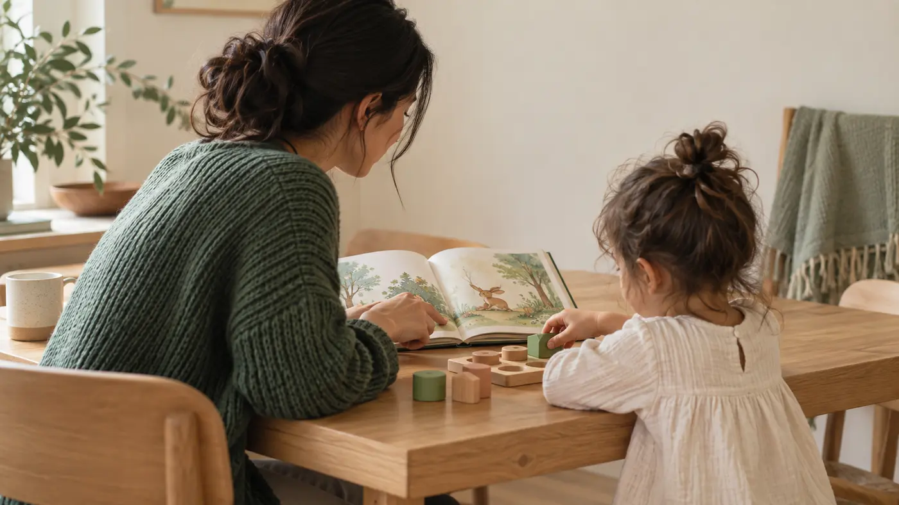

Simple, practical strategies to help young children move from one activity to the next while building skills they will use for years to come.
Why transitions can feel hard
“Time to clean up.” “Let’s put our shoes on.” “It’s time to leave the park.”
For adults, these may sound like simple instructions. For a young child, stopping something enjoyable and shifting attention to something new can be surprisingly difficult.
Developmental connection
Transitions give children repeated chances to practise executive-function skills — managing attention, remembering what comes next, controlling impulses and adjusting when plans change.
5 simple strategies that can help
A visual or audible timer makes time more concrete. Try: “When the timer goes off, it will be time to put our shoes on.”
Young children often need time to shift their attention. Try: “Two more minutes, then it’s time to clean up.” Keep the warning short and consistent.
When children know the usual sequence of events, fewer transitions come as a surprise. For example: Snack → wash hands → shoes → outside.
5 simple strategies · continued
Give children a simple picture of what is happening now and what comes next. Try: “First we put the blocks away, then we go outside.” When appropriate, offer a small choice within the transition: “Shoes first or coat first?”
Move closer, use your child’s name and make sure you have their attention before giving the instruction. Eye contact can help some children attend, but it should not be forced. Use a calm but firm tone and keep the message simple: “It’s time to go. I’ll help you get started.”
Something to remember
Those same abilities will later support classroom routines, completing tasks, managing emotions, solving problems and adapting when things do not go as planned.
Try this at home
Instead of changing everything at once, try one consistent strategy — a timer, a two-minute warning, a “first, then” statement or a predictable routine — and watch what happens.
One thought to take with you
This resource provides general early-years education and is not a substitute for individualized medical, developmental or clinical assessment.